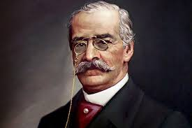

Biografía del Autor
Ricardo Palma (1833-1919) fue un célebre escritor y periodista peruano, famoso por ser el creador del género literario de la "tradición". Su obra cumbre, las Tradiciones peruanas, mezcla historia, ficción, humor e ironía para narrar de forma amena las costumbres y personajes de la época colonial y republicana.
Nacionalidad: Peruana
Especialidad: Tradicionista
Logros y Reconocimientos
Entre sus distinciones más destacadas se encuentran:
- Premio Nacional Javier Prado: Reconocimiento peruano a su labor intelectual y literaria.
- Premio Internacional Editorial Tessaurus: Galardón de poesía otorgado en Brasilia.
- Medalla de la Asamblea Nacional de Francia: Recibida en París en 2009 por su invaluable aporte a las letras hispanoamericanas.
- Homenajes de la Universidad Ricardo Palma: La casa de estudios bautizada en su honor le ha rendido múltiples tributos a lo largo de los años, llevando su legado cultural a instituciones internacionales, como el resguardo de su legado en el Instituto Cervantes.
Libros Publicados en la Biblioteca

Neologismos y Americanismos
Año: 1896
Papeletas Bibliográficas
Año: 1903